大家好，我是橘猫sama，我会用几期专栏带大家熟悉基岩版的存档操作流程，学完了大家就不必QQ群里到处问人了！
为了避免误解，我们需要了解《我的世界》这款游戏的结构。
《我的世界》，即大家所称呼的Minecraft、MC，这款游戏按照编写语言分为Java语言编写的Java版和C++语言编写的基岩版
基岩版可以在全平台运行，包括win10/11，Android，iOS，PlayStation 4，Nintendo Switch，VR等平台
《我的世界》基岩版原生支持添加各种附加包，附加包主要的类型有资源包、行为包（对应数据包）、皮肤包、地图、世界模板等。
以下是其对应的英语名字：
另外，网易代理了《我的世界》国区，电脑能玩Java版和基岩版，手机上的则是基岩版。mojang为基岩版开发了一系列接口，这种接口属于微软接口，但是网易也为基岩版开发了一系列网易组件接口，网易的模组通常使用了网易接口，所以网易的模组不能在国际版中使用！
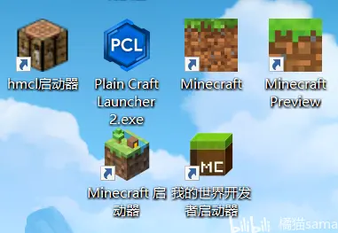
《我的世界》基岩版原生支持导入各类附加包，本文主要介绍Windows平台和Android平台，iOS玩家请在B站搜索相应的教程，都能找到
Windows平台
基岩版默认下载到C盘，位置是C:\Users\用户名\AppData\Local\Packages\Microsoft.MinecraftUWP_8wekyb3d8bbwe\LocalState\games\com.mojang
请学习简单的英语并勤用翻译软件，对于接下来的检索很有帮助
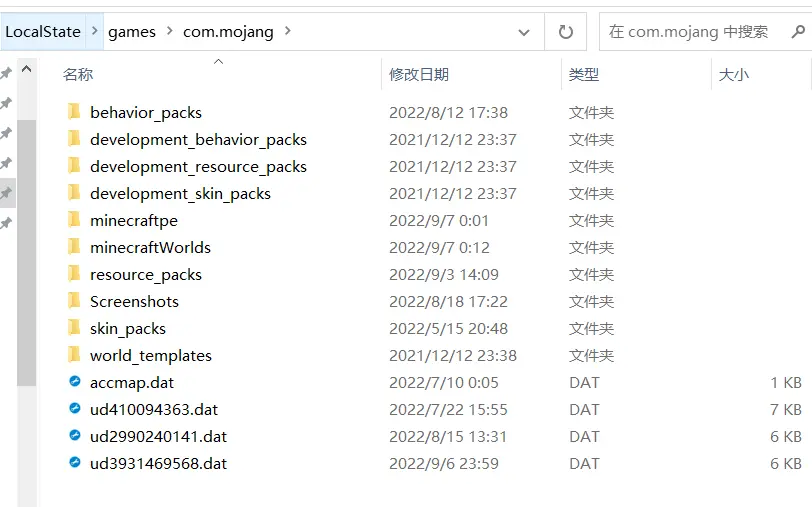
这些是游戏的根目录，下载的文件资源需要放入相应的文件夹内
behavior_packs行为包，常见的类型有修改生物生成规则、自定义方块和生物、修改世界生成、修改合成表&战利品、指令函数等。
resource_packs资源包，常见的类型有方块纹理、生物模型、着色器、材质、粒子、动画等。
skin_packs皮肤包，另外，角色创建器界面也可以直接导入皮肤图片
minecraftWorlds地图，我们所有的游戏地图都在这里
另外，基岩版游戏本体位于C:\Program Files\WindowsApps\Microsoft.MinecraftUWP_1.19.2002.0_x64__8wekyb3d8bbwe
本体名称和你所在的游戏版本相关，内含基岩版数据内容
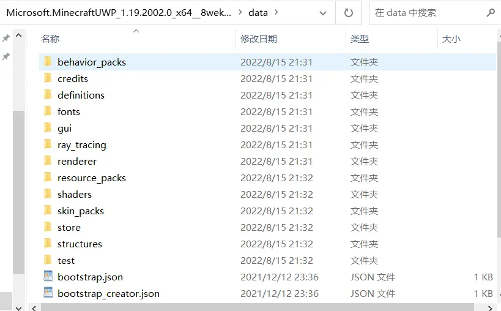
仿照官方的内容和微软文档，我们可以制作自己的纹理包/行为包！
微软官方文档 https://learn.microsoft.com/en-us/minecraft/creator/
Android平台
1.17以前，我们打开文件管理器，找到games/com.mojang即可
但是应谷歌要求，1.18将文件挪入Android文件夹，位置在/emulated/0/Android/data/com.mojang.minecraftpe/files/games/com.mojang/
除了华为基于安卓10开发鸿蒙系统，其他安卓厂商升级安卓11/12以后遇到了Android文件权限限制，但是我们依旧可以通过第三方管理器，如MT管理器 修改Android/data内容
网易我的世界和国际版都是可以的！
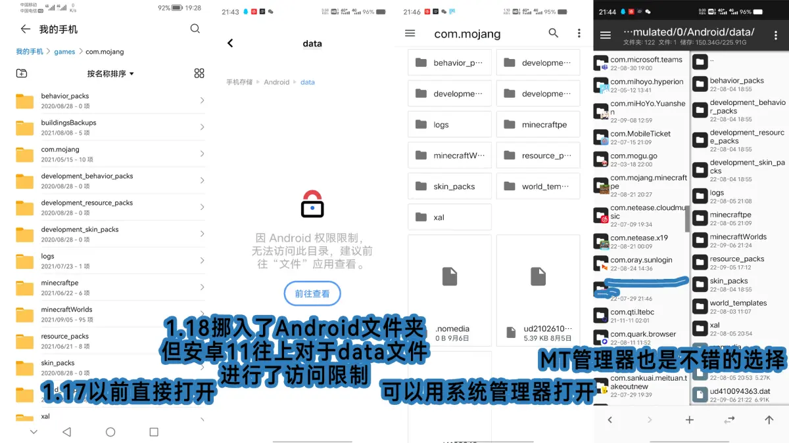
请注意：由于猎豹清理大师以及一众杀毒软件的暴力杀毒，所以1.18存档位置变了以后清理内存有可能直接把地图当做垃圾缓存处理掉，手机清理内存一定要小心！
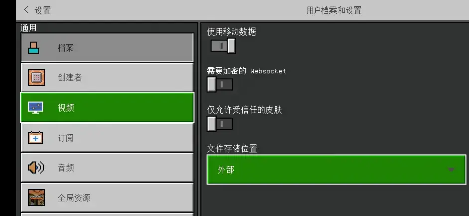
网易手机版
国际版MC的附近就是网易的文件了，非常好找
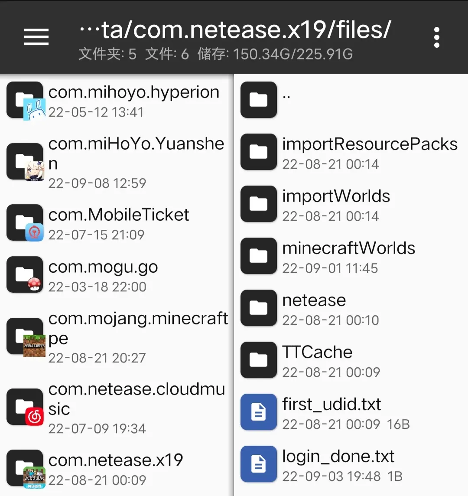
网易个人创建的地图有加密，但是可以用MCstudio导出；资源中心下载的地图和模组有加密，无法在国际版加载。
如果你想导出网易单人地图到国际版玩，教程在BV12a411H7JE ，不过鉴于很多人没有电脑，我提供单人地图转出服务
投20个硬币，即可转出你的单人地图，q群号205097309
手动导入
建议手机端用户使用MT管理器完成操作，电脑端使用任务管理器操作同理
例如你想导入地图的话，先找到游戏的根目录（见步骤1）将文件夹或压缩包导入进来，游戏不能识别压缩包，因此如果是压缩包需要解压缩文件
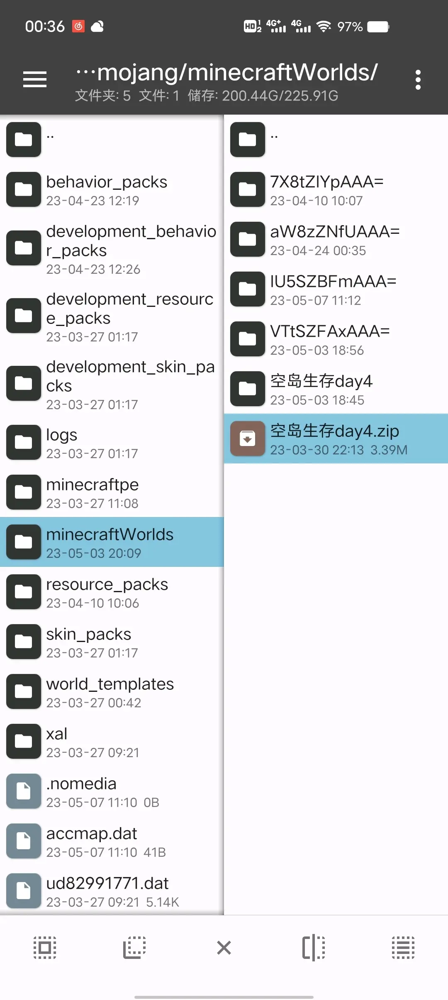
我们需要保证地图的格式正确，点击地图后需要包含db玩家和若干json，不能文件夹套娃
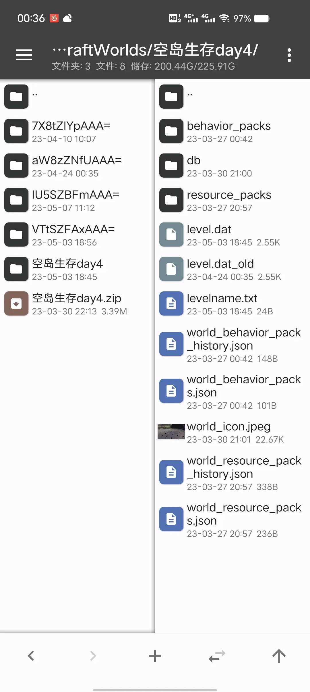
如果是行为包或资源包，也需要保证正确的格式，里面不能套娃
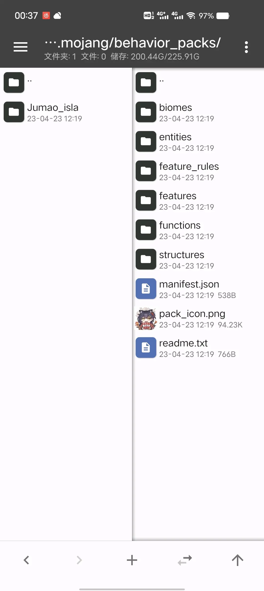
自动导入
在Java版中，我们一般直接把.zip文件.jar文件塞入文件夹。
而在基岩版中，mojang加入了独特的.mcpack .mcaddon .mcworld格式文件，电脑端双击或者手机端选择“其他应用打开”中的“Minecraft”也可以直接导入文件
实际上，以上这些格式的文件其实是一种特殊的.zip文件变种，文件压缩后只要格式合适，把.zip后缀名改成以上的即可导入游戏。
例如“去除buff粒子.zip”直接改成“去除buff粒子.mcpack”，只要格式符合，就可以直接导入
但是！但是！这里的文件一定要符合格式规范！否则会导入失败！
（当然另一种原因是部分组件对于版本有要求，版本不对可能不识别）
下面我们来讲解一下规范的格式以及常见错误
这里拿电脑演示了，手机是一样的流程
地图.mcworld
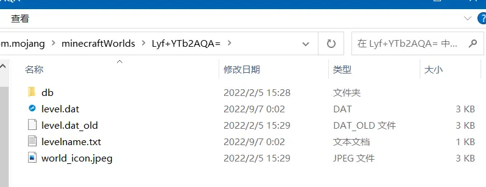
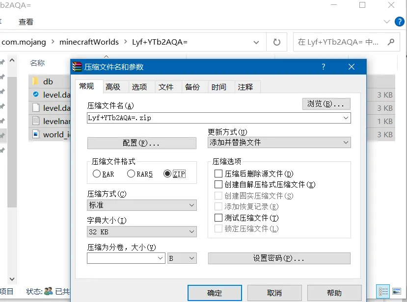
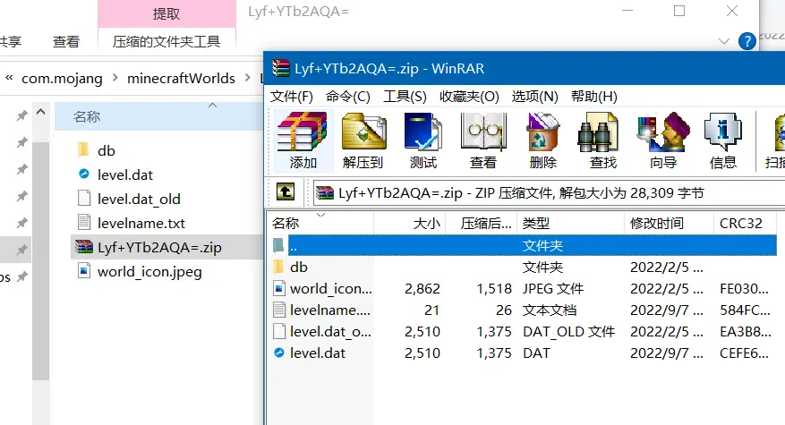
随后，将.zip的后缀改为.mcworld即可。
为什么资源会导入失败呢？主要原因有三：
1.文件套娃，比如你直接压缩前边的文件夹，这个压缩包里面就一个文件夹，系统也不认识这是个啥玩意，然后就会显示导入失败
2.另一种可能是，手机系统抽风，比如你的文件叫做“某建筑v0.1.mcworld”，手机抽风把v0.1的那个“.”当做文件格式了，然后不认识文件就导入失败；那遇见这种情况就只能手动改成.zip格式，弄成文件夹然后按照上文所述位置挪入behavior_packs/resource_packs/minecraftWorlds里面，别无他法，手动导入也是经常用得上的
3.版本不匹配，比如基岩版工业1模组用了脚本引擎，而脚本引擎只能在Windows平台使用并在1.18.30废除掉了；单人假人模组用了ScriptAPI（拿来替代脚本引擎的且全平台适用），而且该框架mojang没做完，所以换游戏版本还得换模组版本
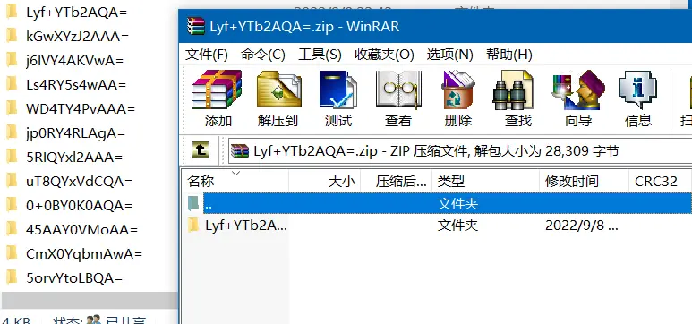
纹理包.mcpack
行为包.mcpack
附加包.mcaddon
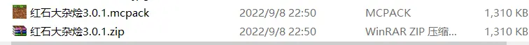
以红石大杂烩为例，我们可以把这个资源包在“.zip”和“.mcpack”两种形式互相转换，其实都是一码事；打开压缩包，可以看到这些文件都是属于纹理包的范围，.zip打包这些文件再改后缀就可以直接制成资源包（意思 =材质包 =纹理包），发给其他玩家
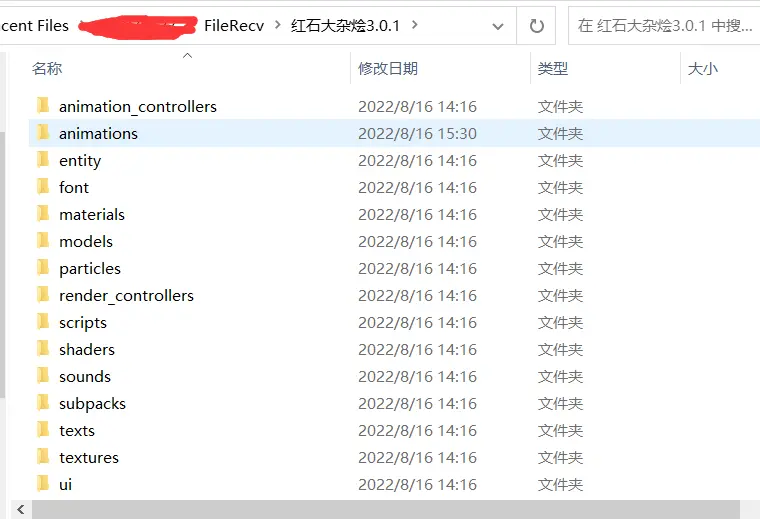
某些附加包中既有资源包也有行为包，亦或者有多个资源包/行为包，那么这种文件就会做成.mcaddon格式，直接把这几个资源包文件夹一起打成.zip，然后改后缀变成.mcaddon即可，游戏自动会分成几个包的
另外，网易的组件是和地图分开储存的；而国际版中，加入资源包/行为包，这些包会直接塞入地图文件一起加载，在全局也可以加装资源包以便服务器使用同时调用一些按键！
注：有些行为包会出现删不掉的问题，删去行为包和带有behavior的.json文件就行了
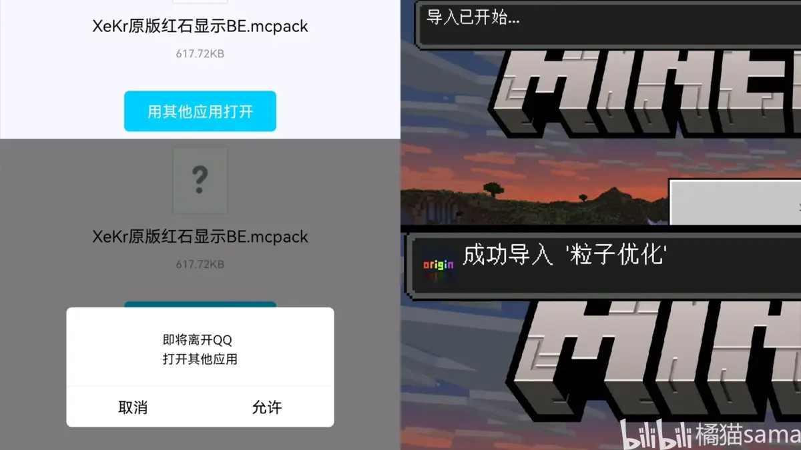
除此以外，QQ等软件也可以直接导入文件，不过有一些bug
蓝奏云因为只能上传.zip所以我一般上传的文件命名为“阿巴阿巴.mcaddon.zip”，删去.zip就能导入，不删可以直接弄成行为包，还是蛮好用的